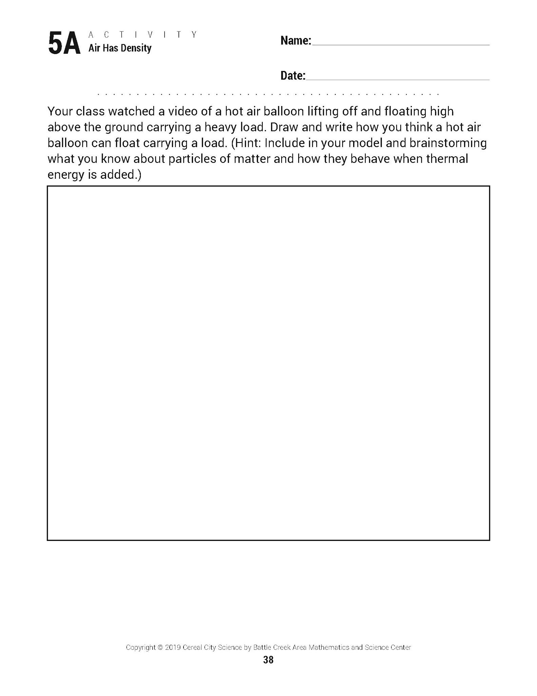
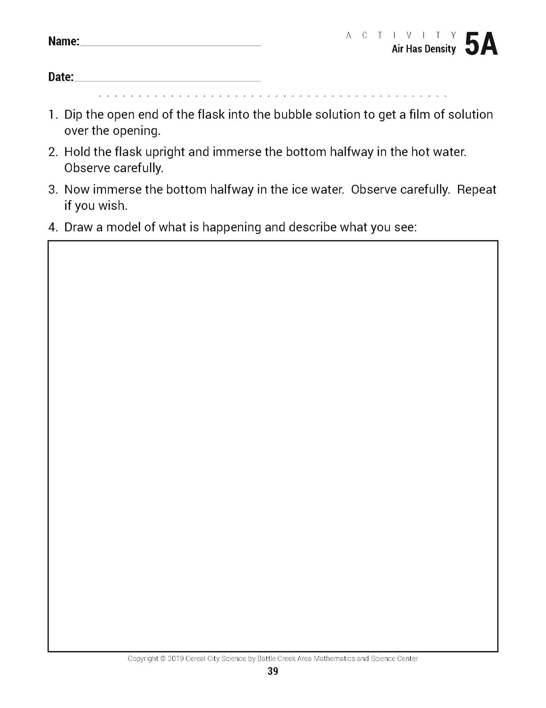

Activity 5A • Air Has DensityJournal page 38 of 84
Name: ______________________________Date: _______________
Your class watched a video of a hot air balloon lifting off and floating high above the ground carrying a heavy load. Draw and write how you think a hot air balloon can float carrying a load. (Hint: Include in your model and brainstorming what you know about particles of matter and how they behave when thermal energy is added.)
Compare with original journal page 38
This is the unmarked scanned page for checking original diagrams, exact wording, or layout. The editable HTML content is above.

Activity 5A • Air Has DensityJournal page 39 of 84
Name: ______________________________Date: _______________
1. Dip the open end of the flask into the bubble solution to get a film of solution over the opening.
2. Hold the flask upright and immerse the bottom halfway in the hot water. Observe carefully.
3. Now immerse the bottom halfway in the ice water. Observe carefully. Repeat if you wish.
4. Draw a model of what is happening and describe what you see:
Compare with original journal page 39
This is the unmarked scanned page for checking original diagrams, exact wording, or layout. The editable HTML content is above.
